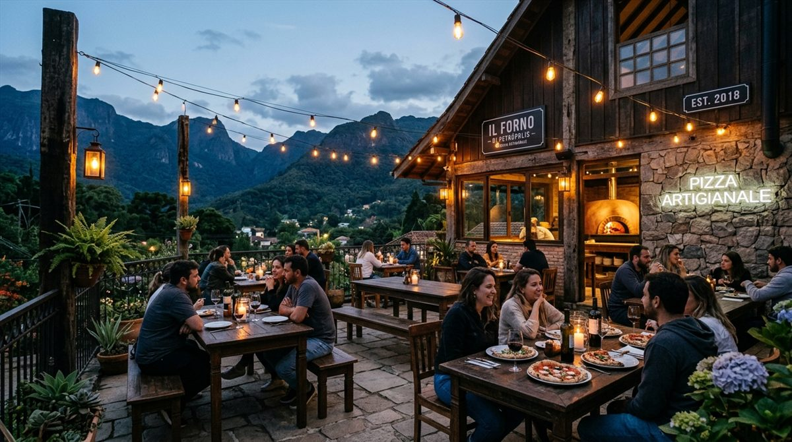
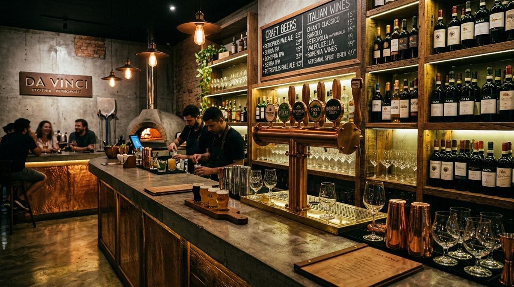
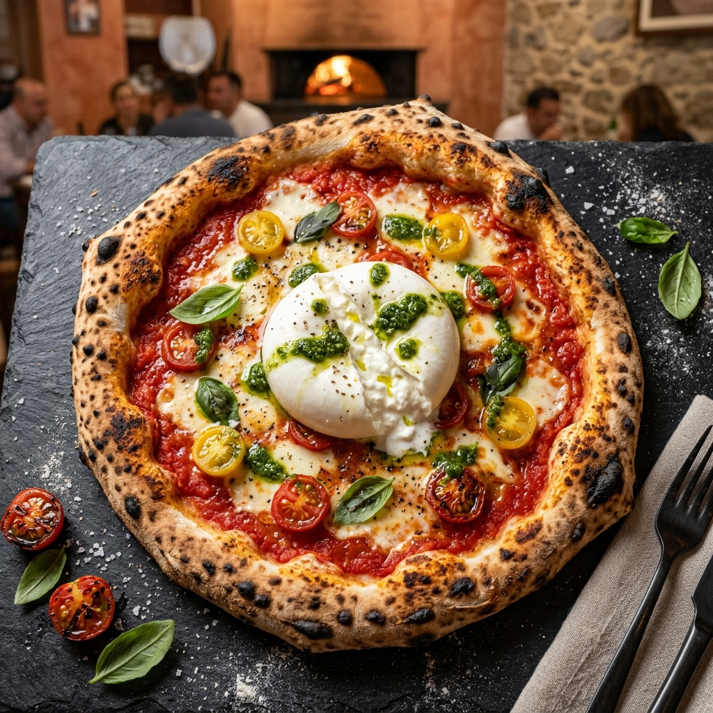
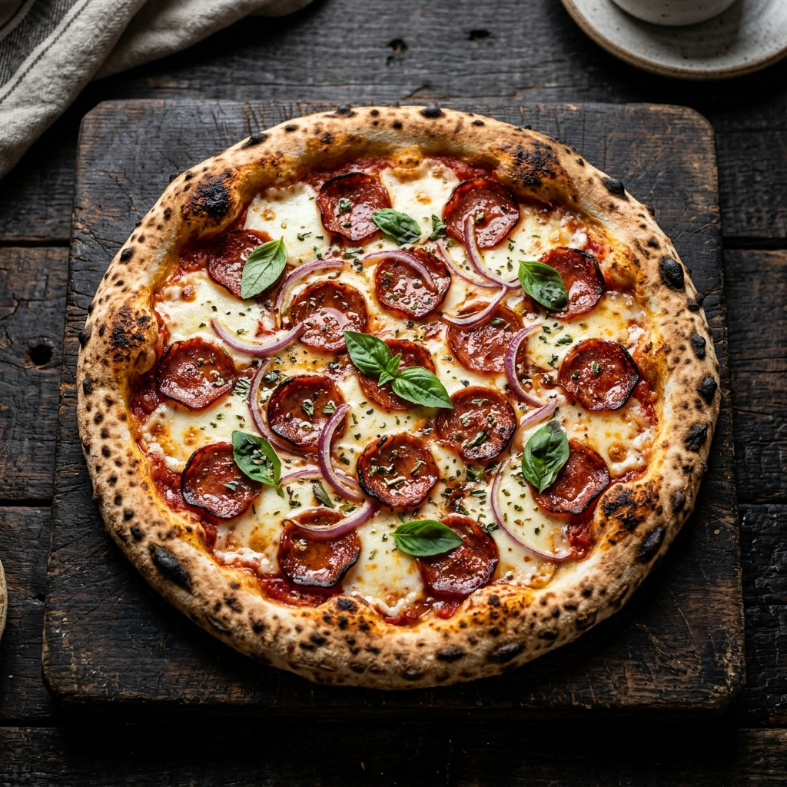
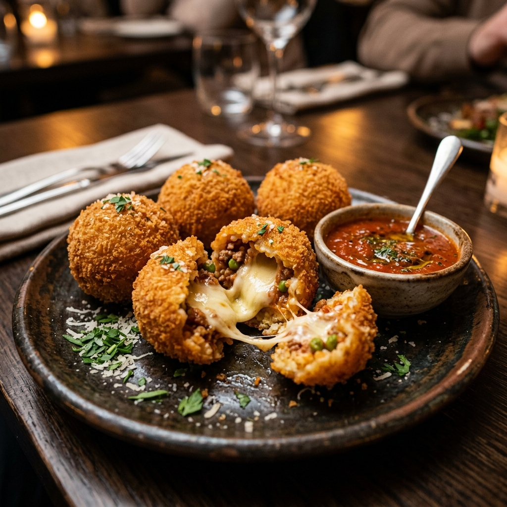

O FOGO A 450°C QUE NUNCA APAGA
Alimentado diariamente com lenha seca de reflorestamento, nosso forno de tijolos refratários atinge 450°C contínuos. Cada pizza é assada em menos de 90 segundos, selando o vapor nos alvéolos da massa para uma borda dourada, crocante por fora e levíssima por dentro.
OS PILARES DA NOSSA CASA
Quatro pilares indispensáveis que definem a textura, o aroma defumado e a identidade da nossa cozinha nas montanhas de Petrópolis.
LENHA DE REFLORESTAMENTO
Madeira de eucalipto selecionada e curada, livre de resinas químicas. Queima limpa e perfumada que confere o aroma defumado único que só o forno a lenha verdadeiro proporciona.
FARINHA ITALIANA TIPO 00
Grãos de trigo de altíssima pureza com 48 horas de maturação lenta a frio. Digestão extremamente leve, massa aerada e bordas douradas inconfundíveis.
BLENDS & CROSTA DE FERRO
Cortes nobres frescos moídos no dia. Prensados na chapa de ferro fundido em alta temperatura para a caramelização Maillard perfeita, muito queijo cheddar derretido e bacon artesanal.
CHOPES DA SERRA & DECK
Torneiras abastecidas diretamente por microcervejarias da Região Serrana de Petrópolis. Chope fresquíssimo servido trincando no nosso deck rústico ao ar livre.
SMASH BURGERS & CROSTA DE FERRO
Blends moídos diariamente a partir de cortes nobres selecionados. Prensados na chapa de ferro em altíssima temperatura com crosta caramelizada perfeita (Reação de Maillard), queijo cheddar inglês derretido, bacon crocante curado e pão brioche selado na manteiga fresca.


RÚSTICO, INDUSTRIAL & ACONCHEGANTE
Vigas de aço aparente, tijolo rústico e luminárias quentes que convidam a desacelerar. O salão tem vista direta para o forno a lenha, e o deck externo ao ar livre proporciona a experiência inconfundível do clima fresco das montanhas de Petrópolis degustando drinques autorais e chopes locais.
A CASA, O SALÃO & O DECK
Um galpão industrial acolhedor no Bingen com mesas de madeira maciça, forno aparente e deck externo ao ar livre no clima fresco de Petrópolis.
O SALÃO PRINCIPAL
Vigas de aço aparente, tijolo rústico e luminárias quentes que convidam a desacelerar com vista direta para a cozinha e o forno napolitano.
O DECK NAS MONTANHAS
Mesas externas no clima fresco da serra de Petrópolis. Espaço pet-friendly perfeito para o entardecer e noites com drinques e chope gelado.

O BAR & AS TORNEIRAS
Balcão de ferro fundido com torneiras exclusivas de cervejarias artesanais da serra e coquetelaria autoral assinada pela casa.

MESA COMPARTILHADA
Mesas amplas projetadas para reunir grupos, comemorações de aniversário e famílias ao redor da mesa com pizzas borbulhantes e smash burgers.
DESACELERE, PEÇA UM CHOPE E FIQUE À VONTADE
Um ambiente projetado com ferro, madeira maciça e iluminação acolhedora para reunir quem você gosta. Chopes locais da serra, drinques clássicos e o frescor inconfundível das noites de Petrópolis.
O OFÍCIO EM IMAGENS
Fotografia real, preparo à vista e ingredientes selecionados na serra.






DÚVIDAS
DO RESTAURANTE
Trabalhamos preferencialmente por ordem de chegada para mesas menores. Para grupos acima de 6 pessoas ou datas comemorativas, recomendamos reservar com antecedência via WhatsApp para garantir a melhor mesa no deck ou salão.
Sim! Nosso deck rústico ao ar livre é 100% pet friendly. Seu melhor amigo é muito bem-vindo para curtir a serra com você, com vasilhas de água fresca sempre à disposição.
Cobramos uma taxa de rolha de R$ 35 por garrafa, incluindo serviço completo de taças e balde de gelo. Na compra de uma garrafa da nossa carta de vinhos, a rolha da sua garrafa pessoal é cortesia.
Há facilidade de parada na via pública em frente à casa e possuímos convênio com estacionamento rotativo seguro a menos de 50 metros da entrada.
Sim! Temos pizzas e entradas vegetarianas consagradas, como Burrata com Pesto de Manjericão, Cogumelos Salteados e Zucchini na lenha. Para intolerantes, adaptamos opções sem queijo sob consulta ao garçom.
Com certeza! Oferecemos pacotes exclusivos para celebrações, aniversários e confraternizações corporativas com menu volante de pizzas e torneiras de chope liberadas. Fale conosco pelo WhatsApp.